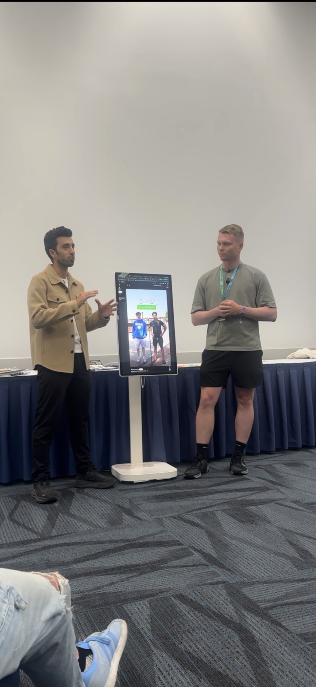
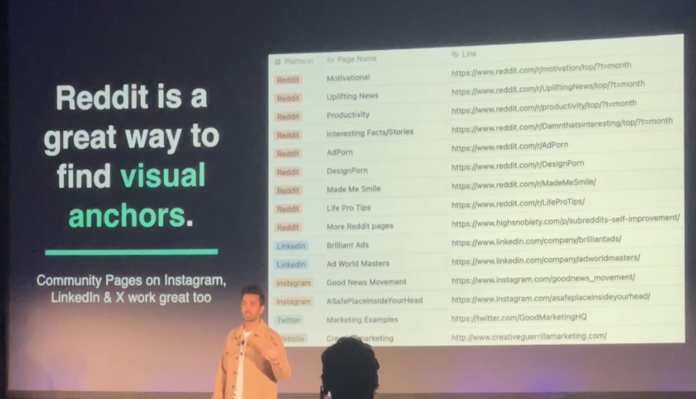
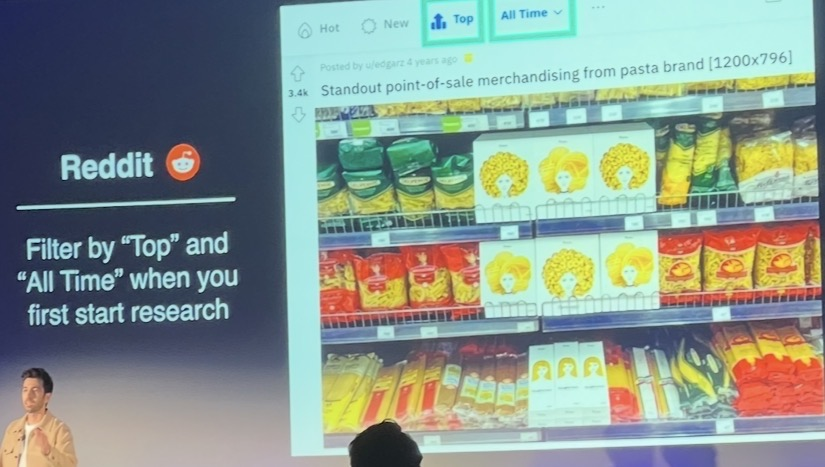
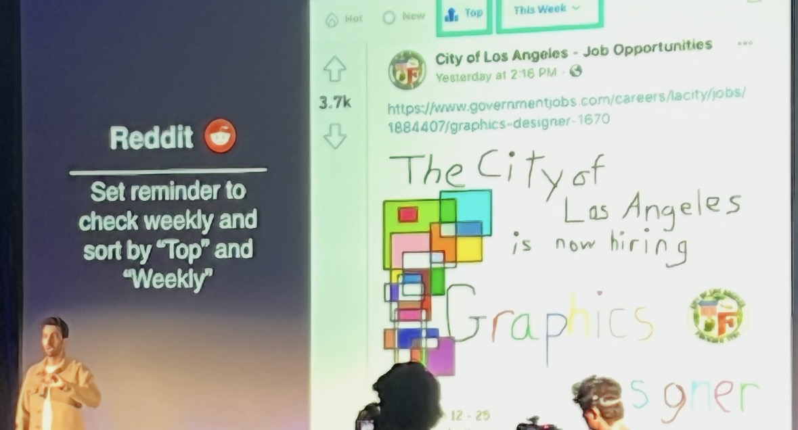
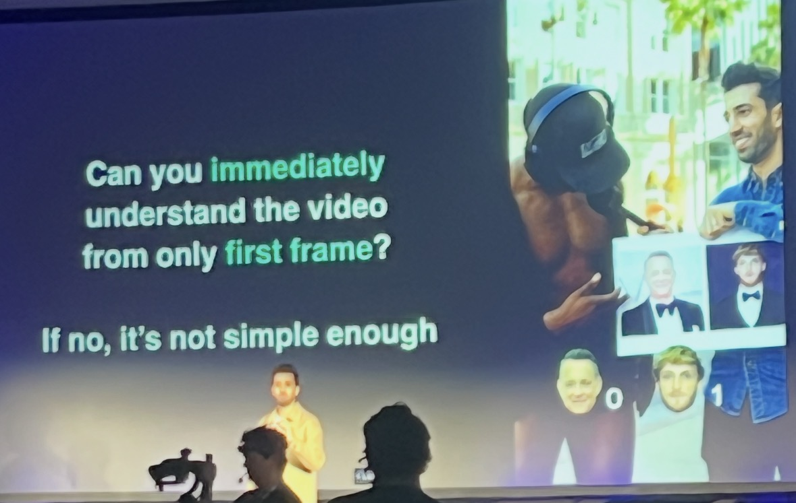
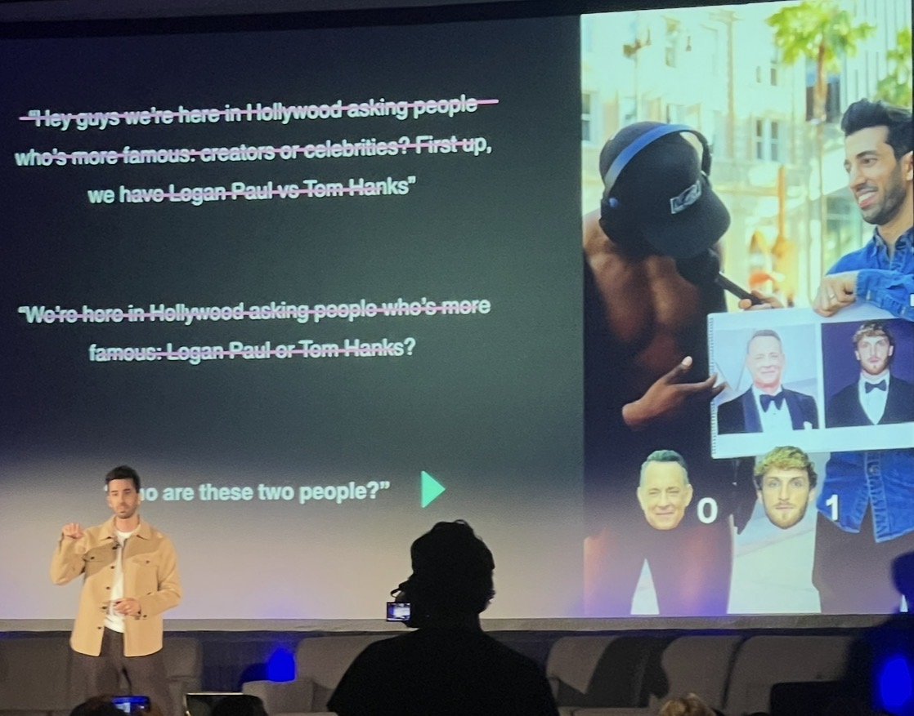
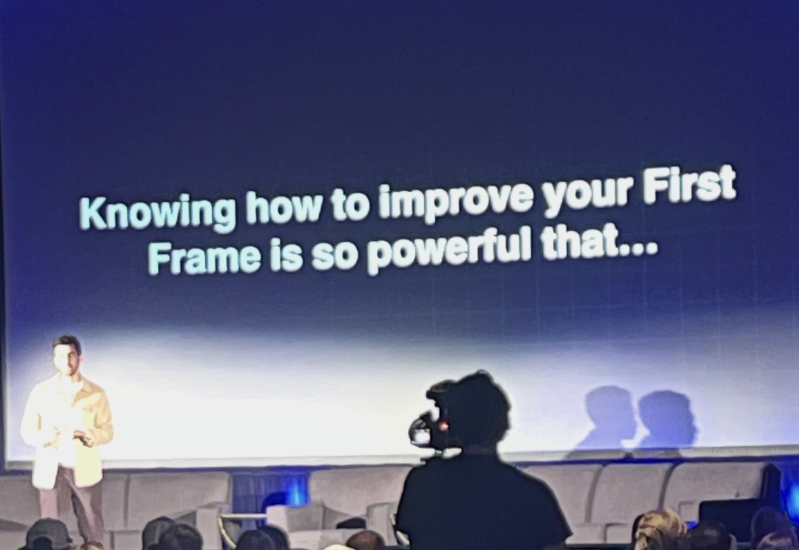
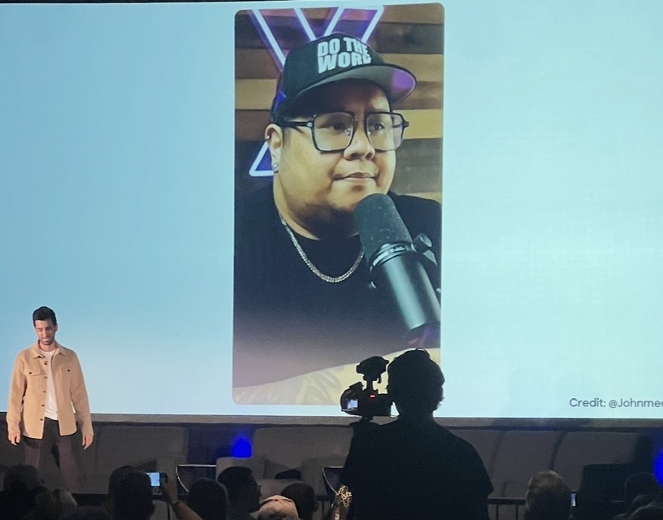

On June 27th, 2026, Jon Youshaei – a creator, journalist, and prominent podcaster in the creator economy – gave a keynote at VidCon 2026 breaking down how to systematically become successful as a creator.
He’s someone who is most widely recognized for both interviewing big creators and even making documentaries about them now (such as his “The Making of Beast Games” 7-part docuseries, where he went behind the scenes with Mr Beast and documented the making of the Amazon Prime x Mr Beast “Beast Games” series) and taking that and teaching earlier-stage creators how to become successful.
Jon Youshaei and Mr Beast behind the scenes of Beast Games.
After the keynote – which thousands of people attended – I was very lucky to be one of the people handpicked out of the audience to have their social media content “roasted” by him personally.

Getting my USC vs. UCLA street interview video “roasted” by Jon live at VidCon.
Before getting that personal feedback from Jon – which he was super generous with by the way – I attended his VidCon keynote, which gives a few more very tactical insights which any aspiring creator, including street interview creators in particular, can apply right away.
Jon didn’t just give the usual “101-level” type stuff that most people give when giving advice for becoming a creator like “be consistent, be original, be authentic!” and all that sort of stuff – he skips over that and gives tactical and practical steps which can actually move the needle.
Don’t Let Perfection Stall Progress and Publishing
Jon mentioned that despite having worked at YouTube for five years, Instagram for three years, and even having been a full time creator for over 4 years now, he still gets “a ton of anxiety” every time he goes to hit upload for videos.
Even now, instead of hitting upload, he’ll go back and try to make certain tweaks, and do endless iterations changing small things like the sound, trimming a couple extra seconds out, or getting the color grading slightly better and so on and so forth.
It got so bad in his first year as a creator in particular that in his first year as a full-time creator, he only uploaded 6 videos (ONLY SIX!). He kept overthinking, he was at 9,000 subscribers, and it was also around that time that Jon and his wife found out they were gonna have their first kid, which helped him stop overthinking as much moving forward.
Fast forward, he’s grown on all platforms – YouTube, TikTok, Instagram, LinkedIn – to 700,000 YT Subscribers and over 1.7 Million views per day in many instances, so it’s worked out for him, but if he would recommend anything, it’s to not overthink things so much like he did at first (and still does!).
It’s Not Too Late To Be A Creator
Jon also emphasized not to listen to people who tell you that “oh my god, the creator economy – YouTube, Instagram, or whatever it is now – is oversaturated” and that “the opportunity to make it is already gone!”
Oftentimes, people will tell you this, but they have no clue what they’re talking about in his opinion.
It is true that the creator economy is getting harder and harder to compete in everyday, BUT at the same time, there’s so much more information now and better guidance than when someone like Jon was just starting out.
And that guidance is what Jon hoped he was able to deliver with this keynote speech.
#1: Visual Anchors Are A MUST For Video Content
Jon emphasized that when making video content, you must use visual anchors – long story short, if you can’t think of any visual anchors (with “tests” for finding some below) with your video idea, then it’s probably something that doesn’t deserve to be a video.
Deciding whether a particular piece of content should be a written blog post or newsletter, written social media post (e.g. X/Twitter, Bluesky), vs. a short form post (e.g. Reels vs TT vs. Shorts), vs. a longform post, is something that Jon thinks is very important.
According to Jon, he thinks that answering the above question is even more important than ideation itself in some senses. A lot of people do talk about the “idea first” – but he thinks that first, you should think about “where that idea is gonna live.”
For example, he thinks that A LOT OF PEOPLE – this is his hot take – make videos that should just be articles.
Not everything should be a video, and he wants to break down how to filter that.
He had this “aha moment” during his interview with Johnny Harris, who is one of the best storytellers/journalists on YouTube, where Johnny said:
If there’s a million good stories that should be reported on, my philosophy is that only 900 of those can be good videos.
Think about that! ONLY 900 out of A MILLION?
Jon asked Johnny how to filter for those ~900, and his answer was:
Visual Anchors – which is visual first writing, visual first storytelling.
Again, not all stories have this, and you want your visuals to be such that when you see the visual, you immediately understand the important aspects of the story, the tension, and ideally, he loves including visuals that anyone - regardless of how informed they are on the topic - the moment they see it, they can tell that “something’s up, something’s happening here and I want to know more…”
So that’s a filter for them – if they can think of a visual that helps explain it, that’s the greenlight that he uses to determine whether to make an idea or story a video or not.
Specific Examples of Visual Anchors
A few years ago, when he was at Vox, he was doing a series about hyperinflation in Venezuela and the subsequent border crisis with Colombia which was a result of the inflation.
He mentioned that most news companies would just setup on the border – which is a “visual anchor” in of itself – and that he did that, but when he got there, he also looked around and asked “what else is happening here?”
The other companies just stuck to that first visual anchor, then spent the rest of the time just spewing out general facts like “Inflation is high! Things are bad!” whereas Johnny focused on continuing to find more visual anchors.
And there were a couple of visual anchors “hiding in plain sight” which no one else was covering.
The first was that there was a vendor on the side of the street that was making sculptures out of money, out of currency. Venezuelan Bolivars (dollars) which were worth nothing because of the hyperinflation crisis were so devalued that they were used as raw materials to make baskets and swan sculptures and so many different things which ended up being beautiful art but was so symbolic.
You didn’t have to know anything about macroeconomics or the geopolitics of South America to see that something was going on there. The guy was literally using money to make sculptures, so that was a visual anchor.
Also, a few blocks away, there was a woman who had come over from Venezuela and was cutting her hair, and selling it to people making wigs, which was another visual anchor.
Yes there’s bigger economic and geopolitical stuff going on here, but the vast majority of viewers can see the tension just by looking at these visual anchors.
That, in his opinion, is the best use of video to bring someone in and really hook them into a topic that maybe they wouldn’t look at otherwise.
How To Find Visual Anchors For a Video? (Johnny’s Advice)
Sometimes the anchor can actually be data or charts – e.g. in a recent video they’re showing a google trends graph showing how many times people have asked “why am I so tired?”
You don’t have to know anything about that topic to see the graph and say/know that it’s going up. You can immediately capture the viewer.
Other times, the visual anchor is a document, like they’ll go into declassified CIA documents, and find one conversation between the president and vice president that got leaked, and you don’t need a lot of context to see that “something’s going on here…”
So visual anchors “hide in a lot of different forms,” and he’s always on the lookout for those little hooks just to bring the audience into the story in a much more engaging way, especially when they wouldn’t look at it otherwise.
How To Find Visual Anchors (Cleo Abram’s “Napkin Test”)
Cleo Abram – another well known YouTuber, Journalist, and former Vox employee – is currently crushing it on YouTube with millions of subscribers along with tens of millions of views per month for her content. To find visual anchors for videos, she recommends using something called “the napkin test.”
When vetting an idea for YouTube, or even to a lesser degree for shorts, here’s what you should ask yourself when trying to figure out whether it’s worthy enough of being a video or not.
Cleo’s full explanation on Youshaei’s podcast (where she calls Visual Anchors “Key Visuals”) starts at ~18:03 in the video below:
Youshaei asked her how she finds great key visuals, especially since he thinks that even if you have a great idea, if you don’t have a great visual, it sounds like her video “pitch” process (which she explains earlier in the video) falls apart.
In her very first video, for example, she had a key visual which was essentially a cutaway of the earth explaining how geothermal energy vs fracking works.
Her answer essentially boiled down to that she would “draw it on a napkin” to explain to someone sitting with her how fracking vs geothermal works, and what you could potentially do with each for example.
Once you pick a story, think about how you would need to explain it to someone else and what you’d need to “draw” or “show” and once you’ve identified that, it’s about framing the entire story around that. Here’s “what you see” and understand from the visual, then you see this and that and so on and so forth.
Youshaei’s interpretation is that “if you’re sitting and having coffee with someone and you NEED to get a napkin out to explain a concept” or “get your phone out,” that might validate that the idea has enough visual anchors to be worthy of producing a video around. (and if not, then it should just be an essay lol!)
Cleo also said that one level up, the visual should ACTUALLY help the explanation though.
Like for example, if you see a video of a plane crash from afar, it doesn’t tell you WHY that happened. It’s just a visual. It doesn’t improve understanding.
BUT, if you see a plane crash and it does a dip and comes back up before crashing again, then maybe that tells you something about WHY that crash happened.
The visual has to be the explanation, and once you have the key visual, is it answering the question, is it doing the explanatory work?
If it’s not, then you have to find another visual or idea!
The Number of Visual Anchors Also Helps You Determine The Format/Medium
The number of visual anchors helps you decide the format roughly as follows:
- Few or No Visual Anchors: a written post or article
- A Few Visual Anchors: a Short, TikTok, or Reel
- Many Visual Anchors: a YouTube longform video
You can obviously break these “rules” as you get bigger and more successful as a creator, but as a smaller creator, you’re still “earning permission” from your audience to go deeper, so try and stick to these guidelines, in Jon’s opinion!
Tip #2: Use Reddit To Research & Find Visual Anchors
In this section, I’m both going to show more Visual Anchor examples to help you understand them better, and I’m going to briefly outline Jon’s systematic way to consistently find good visual anchors via Reddit.
As a quick aside – when Jon was at Instagram, he had the chance to visit BuzzFeed and work with a lot of big creators, publications, and brands, and BuzzFeed’s “Ideas and Content Team” (which sounds like a cool team, btw!) told Jon that
“What happens and breaks on Reddit on Monday ends up on BuzzFeed on Tuesday, which ends up on social media on Wednesday, and then ends up on Facebook next month (lol)…”
Which, Jon thinks there’s a lot of truth to that – Reddit is billed as “the front page of the internet,” after all…
And he’s found a way to easily get tried and true visual anchors from reddit which can help in your own content and so on.
For example, when he was first making content for the creator economy, he put together A TON of Reddits which had advertising as a core theme or focus (as seen below):

Jon’s list of subreddits (and Instagram, LinkedIn & X community pages) for finding visual anchors.
He then sorted by “top” and “all time” for posts, and by “image” and was able to find some pretty creative visual anchors, including the examples below which impressed him:


Two Reddit visual anchors from Jon’s talk – filter by “Top / All Time” when you start, then check “Top / This Week” regularly.
Feel free to return to your subreddits every Friday, and then change the filter from “Top All Time” to “Top This Week” if you still need to find fresh new ideas.
The two examples above are 1) angel-hair pasta packaged to resemble actual hair – the packaging itself was a compelling visual anchor, and 2) The City of LA graphic designer job AD is a great visual anchor since it shows you instantly why LA is hiring a new one (even if this specific posting itself was a bit of a joke).
Instead of relying on “a hunch” or intuition to determine your visual anchors, Jon says that Reddit could be a great way to find those anchors. Then you can decide whether the material warrants a long-form YouTube video, a short or reel, or a written post.
For Longform, Make Your Intros R.A.I.N.Y
This section of Youshaei’s talk was primarily about longform so I’ll basically just give a brief overview and skip it for now – and he also talks about it substantially more on his podcast if you’re interested in learning more.
For longform videos, he recommends using the “RAINY” format for intros – regardless of whether you’re doing scripted videos, or even unscripted videos such as interviews (such as sit-down or man on the street interviews).
Heck – even an observation I’ve seen myself now that I think of it is that not only do all of Jon’s videos follow this (his sit-down podcast interviews), but even James Dumoulin’s “School of Hard Knocks” longform videos that they do essentially follow this format to a T, too.
The letters stand for:
- R – Result: What will the viewer get from the video? Reinforce the title’s promise right away.
- A – Address the objection: What will make someone doubt the video will deliver? Get ahead of their skepticism.
- I – Instant: Establish the premise quickly, within 45 seconds or less.
- N – Why now? Why is this video relevant or timely?
- Y – Why You? Why are you the right person to deliver this value? (often through either expertise, or by being a “guinea pig” if you’re not an expert)
Jon mentioned that people usually have really good BS detectors these days. You need to address their objections and get ahead of them so they don’t click away from the video.
Why now and why you are typically the hardest questions.
Tip #4 – FIX YOUR FRAME (For Shorts!)
The next two sections – along with the previous section on Visual Anchors – contain very important insights for improving short-form video specifically.
What this – “fixing your frame” – concisely means, is that:
“For Shorts, the question is even simpler than RAINY: Can someone understand what is happening from the first frame? If not, your premise may not be simple enough.”

To understand this better, here’s an example of a shorts format that Youshaei used when doing “man on the street” interviews about creators vs celebrities (“who’s more famous”) on the Hollywood Walk of Fame.
The format eventually iterated to the point where some of the videos popped off to 40-50M+ views once he iterated and figured out what he was doing. But at first, his intros especially were way too long – he’s only narrating the first frame by talking, which is by the way, what a lot of people do (and it usually doesn’t work well), so he had no traction then.
The three iterations he went through were the following:

To concisely summarize his three openers and what he did wrong (and eventually right), he said:
- At first, he said “Hey guys, we are here in Hollywood asking people who is more famous: creators or celebrities. First up, Logan Paul vs. Tom Hanks.” – The problem here is that it was way too long, and as mentioned above, it was just him narrating that first frame, which is not good.
- Then he shortened it to a slightly more refined version: “We are here in Hollywood asking people: who is more famous – Logan Paul or Tom Hanks?” – This is better in his opinion, but it was him talking for a while with the microphone before the interaction began.
- Finally, they reduced it to “Who are these two people?” along with a cardboard cutout of their faces in person that he held up, pointed to / showed them. The first frame immediately told you what was going on, so it worked very well.
Go Analog, Not Digital, When Possible
As you can see in the final version of the first frame / video, Jon physically went to FedEx and printed a booklet of celebrity/influencer faces to use as an in-person analog prop in his videos instead of just adding them in after as overlaid graphics with the edit.
It gave scenes an actual object and interaction, and he thinks that these physical props can be more interesting than edited overlays since editing is so easy and accessible these days.
For Youshaei’s “Hollywood Celebrities vs Influencers” series specifically, he would stand there for about three hours, flip through roughly 20 comparisons, and then the result would be about a month’s worth of shorts. This series alone (only 3 hours of filming!) generated around 200 million views. And he mentioned that once you think about and nail down a repeatable process, it becomes very possible to get a ton of content from a single filming session.
The principle goes beyond celebrity trivia interviews, too. Think about how the first frame communicates the format, and how a tangible object can make the experience more immediate.

The First Frame Can Also Signal Credibility
Again, visual cues are POWERFUL to humans. For example, as with the example below, someone can sit behind a professional microphone, look slightly away from the camera, and “appear” to be an “important podcast guest.”

People are trained to make assumptions and associate a podcast-style set, a microphone, and a particular camera angle with authority – which, Jon admitted, could be abused to market/sell products, even if it’s not a real podcast. He certainly doesn’t condone deceptive behavior at all, but it shows how strongly the first frame shapes perception.
Overall, audiences are sophisticated, BUT they still read visual signals instantly. With shorts, think VERY carefully about what your first frame tells them.
Jon’s Personal Feedback on My Interview-Style Videos
Without rehashing everything that Jon said word-for-word since I have a 6-minute video recording of his feedback, I’ll briefly outline what I think my biggest areas of improvement were based both on his feedback, as well as everything I’ve learned and connections I made after analyzing it by putting all of these USC creator and entrepreneur articles together.
1) Ask Better, and/or Different Questions
The main issue that Jon had with this video is that he pointed out to me that the question “What % of Harvard Applicants are Valedictorians?” wasn't that interesting.
Out of the ~100-150 people in the room, only 3 raised their hands when he asked the audience “How many people are interested in hearing the answer to that? Honestly? Raise of hands.”
He then asked me how I pick questions, and I explained that my niche was sort of college / grad school admissions / scholarships, personal finance. Things I’m credible in.
So he said “ok, you picked the question to appeal to your audience then..”
Jon mentioned that here, he’s thinking about his “Core vs. Casual” framework – something Paddy Galloway talked about at length in his separate talk at VidCon which Jon himself briefly touched on in his first speech earlier in the week.
Where, you should think of a more interesting question which would appeal BOTH to your core target audience while also be interesting and appealing to more ‘casual’ people who might come upon my content.
Just as an example he thought of on the spot, he thinks that maybe going to these colleges, like Harvard, Stanford, Yale, MIT, etc. and going up to people and asking “how much scholarship money did you get to attend Harvard (or insert school name here)?” with the Harvard logo or shirts and so on around you as a sort of visual anchor.
Along a similar vein, a good example of this core vs casual concept in a street interview style recently was during the New York Knicks finals games, where street interviewers went up to the fans and asked “how much money did it cost for you to attend this game?”
That’s something that most casual fans would definitely be interested in knowing, even if they’re not basketball superfans.
1.5) Have a Repeatable Audience Experience + Question(s)
This isn’t feedback that Jon gave me directly, but after thinking through his feedback about asking questions, and thinking about what other top street interviewers do, I came to the realization that having a repeatable question (or two or three different ones that I cycle through) that I repeatedly do on multiple college campuses and with completely new people each time, that also appeals to the “casual” not just the “core” fan, might be a good path forward.
Connecting this to my previous work and USC creator talks, this reminds me of Steven He’s point about having a “repeatable audience experience” in your videos.
And even now that I think about it, a lot of street interviewers broke out by doing this exact thing – asking the same question over and over and over again, just with a new person each time – and some even still do this to this day.
- James Dumoulin from “The School of Hard Knocks” does this – he ALWAYS starts off his interviews with exactly the same question, only changing the follow ups based on the interviewee’s responses.
- Chris Stocks did this when he went around Iowa State and malls in Chicago asking various different people “How Much Money Is In Your Bank Account?”
- Viraj Ala – an interview creator that interviews startup founders in SF – always starts off by walking up to a group and asking “Who’s the most ‘cracked’ person here?”
- VoodiesInterviews almost always starts off with “What’s your major?” (and then follow up with “Do you think you can answer 5 questions that X major should know?”)
- Salary Transparent Street always asks “How much money do you make?” or “What do you do and how much money do you make?”
While there’s obviously a lot of interview creators that don’t necessarily stick to the same thing, or who switch once the trend or question they’re doing naturally fades, I think that figuring out a “signature question” which core and casual fans care about which I can reuse over and over again could be a great starting point for breaking out.
2) FIX THE FIRST FRAME!
He didn’t fully understand the context of the video right away – I need to do a better job of setting things up and making things more known at the very first frame – e.g. in this case, it was two students (one from USC and one from UCLA) competing for money, but I didn’t make that obvious on the first slide, and I could’ve made it even clearer that it was at UCLA, too.
3) Introduce More Tension & Stakes
He thinks that – as mentioned above, if I introduced more stakes, like winning money (as they did here, not just getting the questions right), making those crystal clear, and layering those on top clearly could help as well.
Something I could also think about, according to him, is that something that also works well very often with interview style videos, is the tension that’s created when the viewer knows something but the person or contestants in the video don’t or are trying to figure it out – this is great for retention too, oftentimes.
4) “Be In Front of The Camera”
While I might disagree with this recommendation, he did suggest that I go in front of the camera instead of behind it as I was in all of these interview style videos.
I feel like I should take this with more of a grain of salt since BradyYourTutor has been highly successful doing the setup I applied here – just using a tripod and calling the questions from behind the camera since I couldn’t find a cameraperson easily – so his recommendation is something to consider but not a hard and fast rule here.